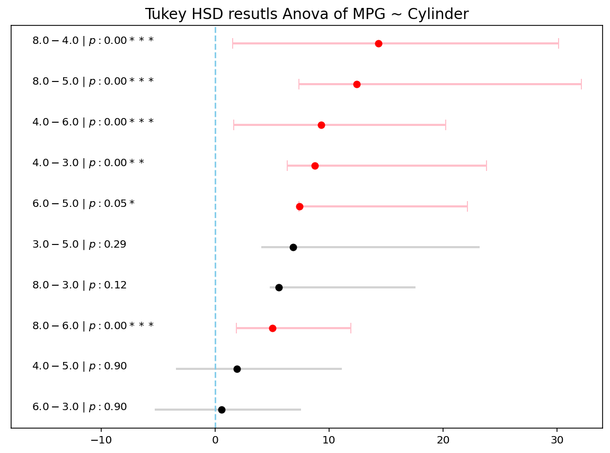

# import libraries
import pandas as pd
# Getting car data from UCI
df = pd.read_csv('https://archive.ics.uci.edu/ml/machine-learning-databases/auto-mpg/auto-mpg.data',
sep='\s+',header=None,
names=['mpg','cylinders','displacement','horsepower','weight',
'acceleration','model_year','origin','car_name'])
df.head()
# Syntax to do anove with validating the assumption, doing test and a post-hoc
results = do_anova_test(df=df, res_var='mpg',xfac_var='cylinders',
anova_model='mpg ~ C(cylinders)+C(origin)+C(cylinders):C(origin)',
ss_typ=3, result_full=True)Overview
All the practitioners of data science always hit one giant thing to do with data and you know it well its EDA -Exploratory Data Analysis. This word EDA1 was coined by Tukey himself in his seminal book published in 1983. But do you think that before that EDA doesn’t existed ?
1 Emerson, J. D., & Hoaglin, D. C. (1983). Stem-and-leaf displays. In D. C. Hoaglin, F. Mosteller, & J. W. Tukey (Eds.) Understanding Robust and Exploratory Data Analysis, pp. 7–32. New York: Wiley. Book is here.
Well glad you thought. Before that all were doing what is called as Hypothesis Testing. Yes, before this the race was majorly to fit the data and make most unbiased and robust estimate. But remember one thing when you talk about Hypothesis Testing it was always and majorly would be related to RCTs (Randomized Controlled Trials) a.k.a Randomized Clinical Trials and is Gold Standard of data.
More on RCTs and ODs
Now let me now not hijack the discussion to what is RCTs and Observational Data (ODs) as it is more of Philosophical Reasoning rather than other quality of data, but essentially what we are trying to find is that can we by, using stats, identify interesting patterns in data.
The only thing happens wit RCT data is that we tend to believe these interesting patterns coincide with some sort of ‘Cause-Effect’ kind of relationship. But essentially due to bia nature of ODs, we certainly cant conclude this. And hence, can only find interesting patterns.
Lets move on. The big question is, for whatever reason you are doing HT , you are doing it for finding something intreating. And that something interesting is usually found by using Post-Hoc Tests. Now there are variety of Post-Hocs available but what is more know and hence easily found to be implemented in Tukey’s HSD.
So lets directly jump to how to follow this procedure. We’ll be using bioinfokit for this, as it is much simpler wrapper around whats implemented in statsmodels.
What are the results
Pheww… Thats too much code right. But that would save a lot of your time in real life. So in real life you would write code as 3 steps below:
Results form the do_anova_test
Levens Test Result:
Parameter Value
0 Test statistics (W) 14.5856
1 Degrees of freedom (Df) 4.0000
2 p value 0.0000
Bartletts Test Result:
Parameter Value
0 Test statistics (T) 61.2143
1 Degrees of freedom (Df) 4.0000
2 p value 0.0000
ANOVA\ANCOVA Test Result:
df sum_sq mean_sq F PR(>F) n2
Intercept 1.0 6195.1701 6195.1701 296.3452 0.0000 0.2727
C(cylinders) 4.0 7574.5864 1893.6466 90.5824 0.0000 0.3334
C(origin) 2.0 241.0703 120.5351 5.7658 0.0034 0.0106
C(cylinders):C(origin) 8.0 577.4821 72.1853 3.4530 0.0046 0.0254
Residual 389.0 8132.1404 20.9052 NaN NaN NaN
Tukey HSD Result:
group1 group2 Diff Lower Upper q-value p-value
0 8 4 14.3237 12.8090 15.8383 36.6527 0.0010
1 8 6 5.0226 3.1804 6.8648 10.5671 0.0010
2 8 3 5.5869 -0.7990 11.9728 3.3909 0.1183
3 8 5 12.4036 5.0643 19.7428 6.5503 0.0010
4 4 6 9.3011 7.6765 10.9256 22.1910 0.0010
5 4 3 8.7368 2.4102 15.0633 5.3524 0.0017
6 4 5 1.9201 -5.3676 9.2078 1.0212 0.9000
7 6 3 0.5643 -5.8486 6.9772 0.3410 0.9000
8 6 5 7.3810 0.0182 14.7437 3.8854 0.0491
9 3 5 6.8167 -2.7539 16.3873 2.7606 0.2919Nice!!!
And plotting is even easier
# Numbers are clumsy for most. Making more interpretable plot on above results.
plot_hsd(results.tukeyhsd.sort_values('Diff'), title="Tukey HSD resutls Anova of MPG ~ Cylinder")Results form the plot_hsd

Plots look good with ‘p-values’.
Conclusion
Now since we applied the above to a Non RCT we cannot conclude that Difference in mpg based on cylinder is huge specially as number of cylinders goes up. But this statement might not be as explicit as might be appearing from plot. Unless you have a strong believe that the data follows with rules and assumptions of RCTs, we should be only seeking interesting as in associated results and not cause-effect results.
Give me “The Code”
Anova Test anova_test.py
from bioinfokit import analys
import numpy as np
from scipy import stats
class KeyResults:
"""
A basic class to hold all the results
"""
def __init__(self,result_full):
self.keys = []
self.result_full = result_full
def add_result(self,name,result):
if name == 'tukeyhsd':
self.keys.append(name)
setattr(self, name, result)
elif self.result_full:
self.keys.append(name)
setattr(self, name, result)
# Anova test code
def do_anova_test(df, res_var, xfac_var, anova_model,ss_typ=3,
effectsize='n2',result_full=False,add_res=False):
"""
Do all sequential anova tests
Step 1) Leven's/ bartellet test for checking weather variance is homogenous or not
Step 2) Main ANOVA/ANCOVA test
Step 3) Tukey's HSD for individual combinations
:param df: Pandas DataFrame holding all the columns
:param res_var: Variable for which we are checking ANOVA
:param xfac_var: Grouping Variables for which we want to do the comparisons
:param anova_model: SM formula for the model. This is life savour to make all things work
:param result_full: To provide all the results of intermediate steps
"""
results = KeyResults(result_full)
# initialize stat method
res = analys.stat()
# doing levens test
res.levene(df=df, res_var=res_var,xfac_var=xfac_var)
print('\nLeven\'s Test Result:')
print(res.levene_summary)
results.add_result('levene',res.levene_summary)
# doing bartlett test
res.bartlett(df=df, res_var=res_var,xfac_var=xfac_var)
print('\nBartlett\'s Test Result:')
print(res.bartlett_summary)
results.add_result('bartlett',res.bartlett_summary)
# doing anova / ancova
res.anova_stat(df=df, res_var=res_var, anova_model=anova_model,ss_typ=ss_typ)
aov_res = res.anova_summary
# Add effect sizes
if effectsize == "n2":
all_effsize = (aov_res['sum_sq'] / aov_res['sum_sq'].sum()).to_numpy()
all_effsize[-1] = np.nan
else:
ss_resid = aov_res['sum_sq'].iloc[-1]
all_effsize = aov_res['sum_sq'].apply(lambda x: x / (x + ss_resid)).to_numpy()
all_effsize[-1] = np.nan
aov_res[effectsize] = all_effsize
#aov_res['bw_'] = res.anova_model_out.params.iloc[-1]
aov_res = aov_res.round(4)
# printing results
print('\nANOVA\ANCOVA Test Result:')
print(aov_res)
results.add_result('anova',res.anova_summary.round(4))
results.add_result('anova_model',res.anova_model_out)
# doing tukey's hsd top compare the groups
res.tukey_hsd(df=df, res_var=res_var,xfac_var=xfac_var, anova_model=anova_model,ss_typ=ss_typ)
print('\nTukey HSD Result:')
print(res.tukey_summary.round(4))
results.add_result('tukeyhsd',res.tukey_summary.round(4))
# add all result componets again if needed
if add_res:
results.add_result('allresult',res)
return resultsPlotting results plot_hsd.py
import seaborn as sns
import matplotlib.pyplot as plt
plt.style.use('seaborn-bright')
def plot_hsd(hsdres,p_cutoff=0.05,title=None,ax=None,figsize=(10,7)):
"""
Do plotting of tukeyhsd results
:param hsdres: 'tukeyhsd' result form the do_anova_test function
:param p_cutoff: Cutoff at which we get say a combination is significant
:param title: Title of the plot
:param ax: Define or get the matplotlib axes
:param figsize: Mention Figure size to draw
"""
if ax is None:
fig,axp = plt.subplots(figsize=figsize)
else:
axp = ax
# helper func
p_ind = lambda x : '' if x > 0.1 else ('+' if x > 0.05 else ('*' if x > 0.01 else ('**' if x >0.001 else '***')))
label_gen = lambda x: f"${x[0]} - {x[1]}\ |\ p:{x[2]:0.2f}{p_ind(x[2]):5s}$"
#setting values
mask = hsdres['p-value'] <= p_cutoff
yticklabs = hsdres[['group1','group2','p-value']].apply(label_gen,axis=1).values
ys = np.arange(len(hsdres))
# adding plot to axes
axp.errorbar(hsdres[~mask]['Diff'],ys[~mask],xerr=np.abs(hsdres[~mask][['Lower',"Upper"]]).values.T,
fmt='o', color='black', ecolor='lightgray', elinewidth=2, capsize=0)
axp.errorbar(hsdres[mask]['Diff'],ys[mask],xerr=np.abs(hsdres[mask][['Lower',"Upper"]]).values.T,
fmt='o', color='red', ecolor='pink', elinewidth=2, capsize=5)
axp.axvline(x=0,linestyle='--',c='skyblue')
axp.set_yticks([])
(l,u) = axp.get_xlim()
axp.set_xlim(l+1.5*l,u)
(l,u) = axp.get_xlim()
for idx,labs in enumerate(yticklabs):
axp.text(l-0.1*l,ys[idx],labs)
axp.set_yticklabels([])
# finally doing what is needed
if ax is None:
plt.title('' if title is None else title,fontsize=14)
plt.show()
else:
return axpHope this give you kickstart to find you intresting patterns. Happy Learning!